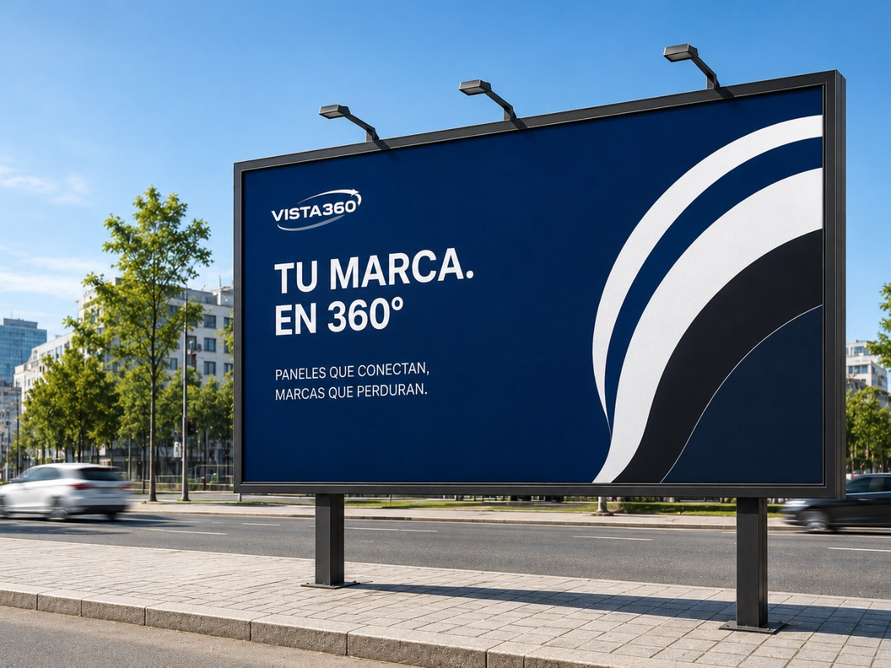
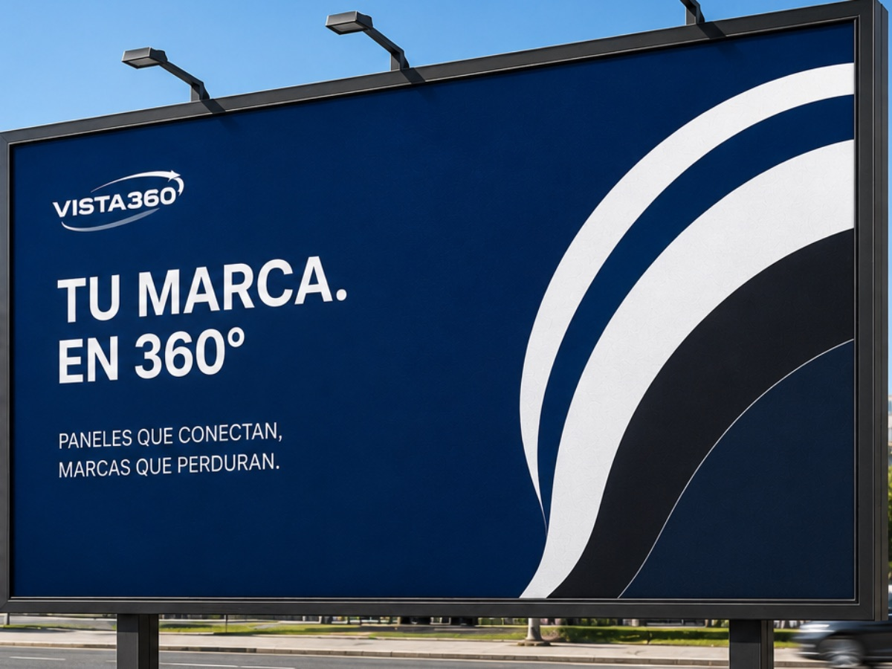
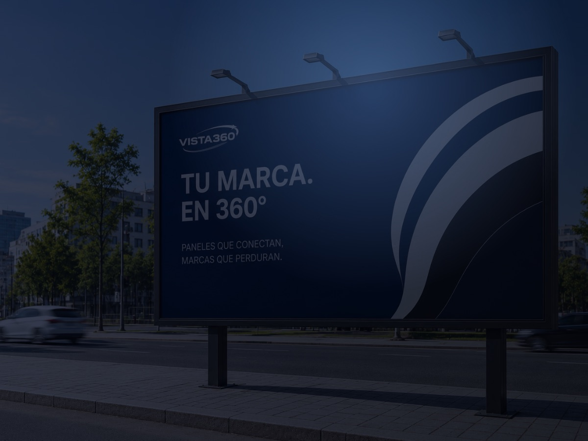

Una muestra de campañas y soportes en funcionamiento. Así se ve una marca cuando se hace imposible de ignorar.
Paneles de gran formato sobre las avenidas de mayor tránsito de la ciudad. Visibilidad garantizada de día y de noche, imposible de ignorar.

Formatos de gran escala sobre fachadas en pleno centro comercial. Una pieza monumental que convierte el espacio urbano en una experiencia de marca.

Soportes iluminados pensados para brillar al caer la noche, cuando el flujo hacia los corredores comerciales alcanza su punto más alto.

Cada campaña está pensada para darle a tu marca más visibilidad, día tras día.
Conversemos sobre tu campaña y te mostramos las ubicaciones disponibles para que destaques.
Solicitar cotización ›